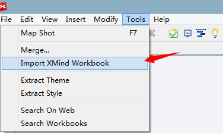
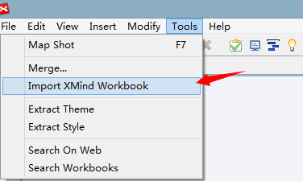

XMind ブックのインポート
ひとつの XMind ファイルは、いくつかのシートを含むブックです。ある状況下では、いくつかのファイルをマージしたいことがあるでしょう。
- XMind を起動し、A.Xmind ファイルを開きます。
- メニューの[ツール]→[XMindワークブックをインポート]を選択します。
- B.Xmind ファイルを選択し、確認します。
- B のすべてのシートが、A の一部となります。

ひとつの XMind ファイルは、いくつかのシートを含むブックです。ある状況下では、いくつかのファイルをマージしたいことがあるでしょう。
